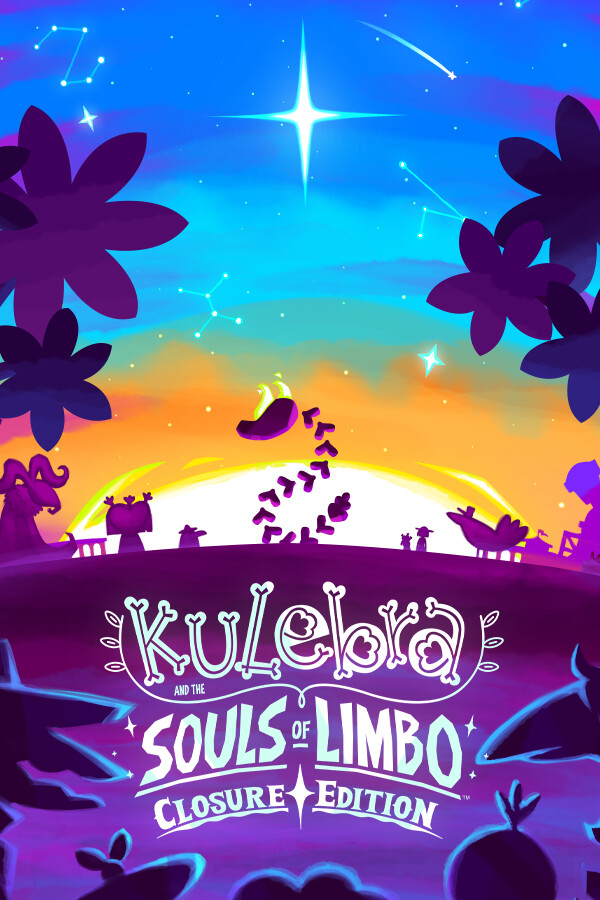

Kulebra and the Souls of Limbo
Every archived year-end list appearance, including placement and points earned.
About the Game
As Kulebra you’ll explore Limbo, a vibrant, Latin American flavored afterlife full of danger, intrigue, humor, sneakery, and deep, dark mystery. You’ll be using many tricks and skills to help the colourful (literally) residents of Limbo accept and embrace their issues of loss, trauma, and the consequences of not letting go as they repeat their days again, and again.A keen eye, sharp wits, sneakery, and good old-fashioned detective work will be required to accomplish your tasks. But you’re a Bright Soul. It’s what you are called to do, because untangling an afterlife is no easy feat, especially when you don’t have feet.Death is not the end of delight. From the colours to the characters, this wonderful and fantastic journey through Limbo is woven with humour and lighthearted fun. Mystery, puzzles, exploration and joy await Kulebra.Perfect for beginner and veteran adventure game fans alike, Kulebra combines classic adventure gameplay with modern sensibilities. Light action and stealth sequences mix up traditional adventure game play, giving Kulebra a quicker pace!Clues discovered in conversation, exploration, and puzzle solving will help you discover the deeper mysteries of the citizens of Limbo… and of Limbo itself, but you don’t need to remember everything. Your handy notebook is always available to you to reference, even in the most tense situations.Day, Afternoon, and Evening. The Citizens of Limbo are trapped in a moment of their lives. The sun rises and sets as they go through the same motions every day. As a Bright Soul you remember everything. You are able to advance the day cycle on your own in order to dig down into the mystery of why these souls are trapped. Use the patterns you discover and what you learn to change the world, mark their souls, and create lasting, meaningful change.A host of wonderful spirits, entities, and other creatures besides, inhabit Limbo. Limbo is filled with character and characters. There are brilliant allies to aid and guide you, spirits will engage you in spirited conversations, native entities with their own feelings about the dead, and others have deeper and darker motivations. It’s up to you to find out which is which and who is who.Kulebra is a unique type of entity in this world, a Bright Soul. While you are counted among the dead, you are one of the few who have the unique ability to change the cycles many of the dead find themselves in. Through conversation, discovery, empathy, and some snooping around, you can mark the souls of the dead, helping them overcome what keeps them trapped, and eventually move on. You can help the Souls of Limbo create actual and lasting change.ABOUT THE DEVELOPERGalla was founded by two Dominican brothers in Illinois, USA, in 2015, although we started long before moving to the USA. We decided to form this studio because we want to bring adventures and stories that spark enjoyment and leave a big impact on those who experience it, the same way past games shaped us. Our first project was a mobile endless runner with story elements. This game helped us gain a lot of development insight and confidence as developers. We didn’t want to give up on the studio and our game, so we decided to give the characters and setting of that game a second life to transform them into something a lot closer to games we’ve loved, leading to the creation of Kulebra and the Souls of Limbo.
| Released | 2025-05-15 |
|---|---|
| Developer | Galla, Galla Games |
| Publisher | Fellow Traveller |
| Genres | Adventure, Indie |
| Platforms | PC |
SingleplayerSteam AchievementsFull controller supportSteam CloudAtmosphericStory RichExplorationStealthDarkFamily FriendlyCuteMystery
Game information provided by RAWG.
Points by Year
List History
| Year | Source | List | Placement | Points |
|---|---|---|---|---|
| 2025 | NPR | The best games of 2025, picked by NPR's staff | Unranked | 1 |
| 2025 | WayTooManyGames | Top 20 Best Games of 2025 | 14 | 3 |